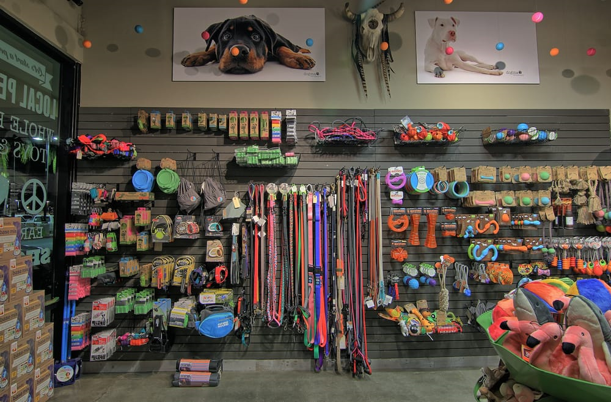

How it all started for Furry Baby
We founded Furry Baby Inc. during COVID-19 pandemic. Our well-established restaurant business took a hit and we had to reinvent ourselves. Both my husband and I love dogs, we love playing and caring for them. We found time spent with our furry baby to be therapeutic and full of joy. We understood that during this pandemic furry babies were the only joyful experience and sometimes even the only way to go out for a walk for many people. So, when we partially closed our restaurant and couldn’t rent emptied space, we decided to put our pet shop. It wasn’t completely spontaneous decision, though. I always loved animals and was helping my mom with her job as a veterinarian when I was a kid. Love and care for animals were my second nature.
Our journey wasn’t all nice and easy though. We had troubles finding good dogfood and accessories suppliers. After countless attempts to find a local manufacturer of high-quality home-made dog food we got an idea. We had our Furry Baby pet store next to our restaurant that was working on deliveries and curb-side pick-ups only at that time. These two businesses of ours were sharing a small side kitchen room behind. And we had one available cook that we would have to let go otherwise. So, we started producing our own home-made dog food, the very same recipes we were making for our own furry baby. Our high-quality home-made dog food got so popular that we started to get more and more out of state orders.
To make the best furry baby accessories we hired a group of laid off because of the pandemic designers, who were able to come up with incredible ideas. After researching the very best materials and ways to start our own production we were on track with the successful business we didn’t even dream about.
Today, we sell goods of our own brand as well as the best quality partnering brands. We are proud of what we have accomplished so far! We are happy we could safe workspaces for our employees during these challenging times! And we are happy and proud to offer new job opportunities to many more affected workers of our community. Last but not least, we are happy and proud to see our excited furry babies clients as well as their happy parents.
Our advice for young people looking to start their own businesses? Follow your dreams: “Where there’s a will, there’s a way. As long as you have the drive and the passion, you can do it.”
Our Adopt Initiative
We are proud to say that we helped more than 100 chihuahuas to find there new parents and permanent homes. If you are looking for a new pet and want to do something good - consider adopting a chihuahua! Chihuahuas are balanced, graceful dogs of terrier-like demeanor, weighing no more than 6 pounds. They are extremely smart and lovely!